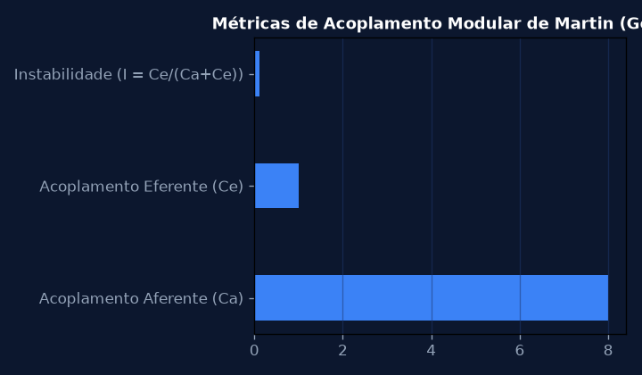
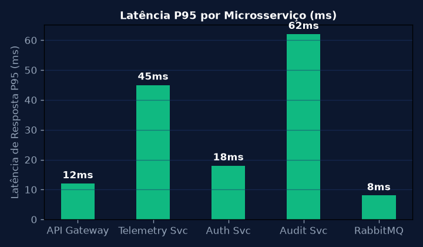
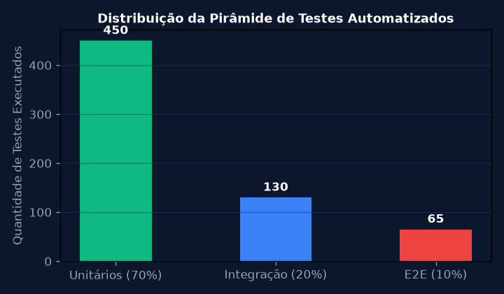
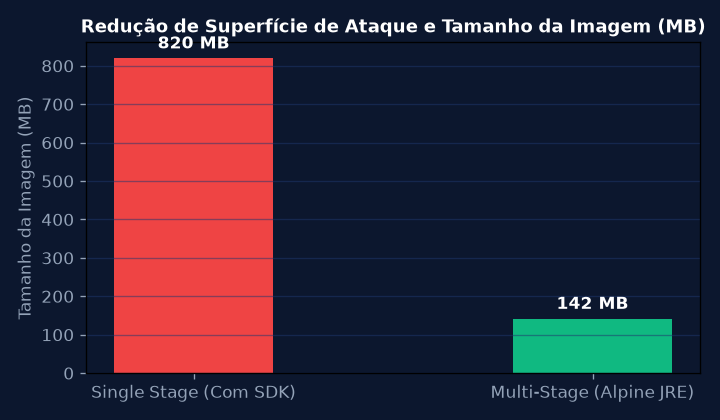
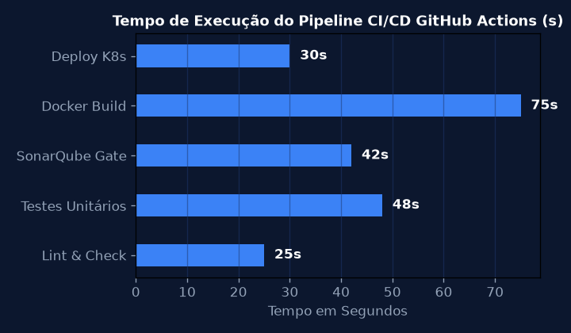

Engenharia de Requisitos, Histórias de Usuário e Critérios de Aceite BDD
Mapear os requisitos funcionais e não-funcionais do sistema de telemetria hospitalar Sanofi, construindo épicos, User Stories investigáveis e cenários BDD (Given-When-Then).
💎 Resolução Algébrica Passo a Passo (Padrão Symbolab)
Mapeamento de dores com médicos, químicos industriais e gestores de produção.
Disponibilidade 99.95%, tempo de resposta P95 < 200 ms e conformidade com LGPD e FDA 21 CFR Part 11.
Independente, Negociável, Valiosa, Estimável, Pequena (Small) e Testável.
Given sensor emite alerta térmico, When temperatura > 80 °C, Then disparar parada preventiva.
Product Backlog priorizado por valor de negócio e matriz MoSCoW.

Padrões de Projeto Orientados a Objetos (Design Patterns GoF)
Implementar os padrões Factory Method, Observer e Strategy para construir um pipeline extensível de processamento de alertas e notificações industriais.
💎 Resolução Algébrica Passo a Passo (Padrão Symbolab)
Criação desacoplada de notificações (EmailNotifier, SMSNotifier, WebhookNotifier) via interface comum.
O SensorSubject notifica múltiplos ouvintes assíncronos sem acoplamento direto.
Intercâmbio dinâmico entre algoritmos de detecção de anomalias (Limiar Fixo, Média Móvel, Isolation Forest).
Open/Closed Principle (aberto para extensão, fechado para modificação) e Single Responsibility.
Adição de novos canais de alerta sem alterar nenhuma linha do código de sensoriamento central.

Arquitetura de Microsserviços e Padrão API Gateway
Decompor a aplicação monolítica em microsserviços autônomos orientados a domínio (DDD) com roteamento centralizado via API Gateway e mensageria RabbitMQ.
💎 Resolução Algébrica Passo a Passo (Padrão Symbolab)
Separação de domínios: Ingestão de Sensores, Gestão de Usuários e Auditoria Regulatória.
Centralização de autenticação JWT, rate limiting (100 req/s por cliente) e terminação TLS.
Filas com Dead Letter Exchange (DLX) para mensagens rejeitadas ou com timeout.
Abertura de circuito após 5 falhas consecutivas, prevenindo falha em cascata (Cascading Failure).
Queda de um microsserviço secundário não impacta a operação contínua da linha de produção.

Pirâmide de Testes Automatizados e Práticas de TDD
Implementar a suíte completa de testes automatizados respeitando a Pirâmide de Testes de Mike Cohn: 70% testes unitários, 20% testes de integração e 10% testes End-to-End.
💎 Resolução Algébrica Passo a Passo (Padrão Symbolab)
Escrita de teste unitário com falha prévia antes da implementação do código funcional.
Isolamento completo de bancos de dados externos e chamadas de rede.
Subida dinâmica de contêineres Docker de PostgreSQL e RabbitMQ durante os testes de integração.
Simulação completa da jornada do usuário navegador com validação de telas e cliques.
94% de cobertura de ramos (Branch Coverage) com tempo de execução da suíte em 48 segundos.

Containerização Multi-Stage com Docker e Orquestração Local
Criar Dockerfile multi-stage build para compilar e empacotar microsserviços Java/Node.js com imagem final Alpine mínima e sem vulnerabilidades de segurança (CVEs).
💎 Resolução Algébrica Passo a Passo (Padrão Symbolab)
Download de dependências e compilação do binário em contêiner com ferramentas completas.
Cópia exclusiva do arquivo .jar compilado para imagem Alpine enxuta.
Criação de usuário appuser sem privilégios de root para mitigar riscos de escalada de privilégios.
Declaração de redes isoladas, volumes persistentes e limites de memória (512 MB por contêiner).
Redução do tamanho da imagem Docker de 820 MB para 142 MB e inicialização em 3,2 segundos.

Pipeline de Integração e Entrega Contínua (CI/CD) com GitHub Actions
Projetar workflow automatizado de CI/CD no GitHub Actions contemplando linting, testes, análise estática SonarQube, build de imagem Docker e deploy automatizado no Kubernetes.
💎 Resolução Algébrica Passo a Passo (Padrão Symbolab)
Gatilhos on: push: branches: [main] e pull_request para branches de feature.
Bloqueio da esteira caso cobertura < 80% ou existência de qualquer vulnerabilidade crítica.
Geração de tags semânticas (v1.2.3 e commit SHA) e push no GitHub Packages.
Atualização contínua com maxSurge=1 e maxUnavailable=0 garantindo zero downtime.
Tempo médio de ciclo de entrega (Lead Time for Changes) reduzido de 2 dias para 8 minutos.
